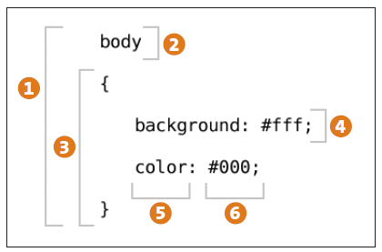

<!doctype html>
如何组织CSS可以有多种角度，比如：按功能划分，按照区块划分等，不同的组织方法有不同的优缺点。
我比较喜欢的组织方法：
reset.css + meta.css + common.css + page.css [+ widget.css]
其中：
reset.css + meta.css = base.css;
base.css + common.css = core.css
base.css提供reset功能和粒度最小的通用类meta.css---原子类
base层相对比较稳定，基本上不需要维护。
common层位于中间层，提供组件级和框架级的css类，
我一般喜欢讲代码“模块化”，将常用的模块抽化出来，
这样其他页面可以复用，UI风格也保持一致。
.row-mod { margin: 0 auto; width: 960px; }
.col-main { float: left; width: 750px; /* x + 10 + 200 = 960px */ }
.col-sub { float: right; width: 200px; }
合并为core.css
base.css + common.css = core.css
common.css一般指定专人来维护，如有需要变动，通知专人。
例如：爱拍首页拍婚纱、拍写真、妈妈宝宝导航
页面级别的样式，一般只有本页面使用
可以覆盖common.css里面的样式
如果有些样式全站都要使用，则提取出来放到common.css中，如果有一两个页面也会用到，那么可以提取出来放到一个新的css文件中。
组件或者模块级别的样式写到这里，一般是和组件的 js 文件一起使用。
我们有时候会把一些共用的css文件打包到page里面去
或者把page里面的样式打包到core里面去
最好是把把全站级的放到core里面，其他页面利用缓存
<head>
<title>demo</title>
<link href="css/core.css" type="text/css">
<link href="css/page.css type="text/css">
<link href="css/widget.css type="text/css">
</head>
一般有多行式和单行式
.row-mod {
margin: 0 auto;
width: 960px;
}
.row-mod{margin: 0 auto;width: 960px;}
我个人比较喜欢多行式，
一个是因为好添加注释，
另一个就是css3时代到来后，要写很多的属性，会很长，
再就是调试的时候总是使用firebug
注释我一般分为文件注释、模块注释（大，小）、单行注释
文件注释就是在css文件顶部写清楚改文件样式是用于那一个或那几个页面，作者，版本等，如：
/**
* Style for city index.
*
* @author yaowu.huang@gmail.com
* @version 1.1.0 build 2011-07-25
*/
模块注释（大，小），一般在写样式的时候，都喜欢分模块，这也比较好组织，好管理，更容易维护，如：
/*
* category,拍婚纱、拍写真、选商家、搜索页的分类标签
* @todo: 是否从core.css里剥离出去，它属于core吗？
*/
.catgory {}
/* 头部标题 */
.catgory .hd {}
.catgory .hd .title {}
/* 主题内容 */
.catgory .bd {}
大模块注释也叫宇宙大螺旋注释，就是用夸张的注释来将css样式分块，比较好维护，如：
/* ****************************** 拍婚纱 ****************************** */
.wed { }
/* ****************************** 妈妈宝宝 ****************************** */
.child { }
单行注释，一般用来注释说明hack，或者某个数值是怎么计算得来的，如：
.col-main {
float: left;
width: 738px; /* 738 + 20 + 202 = 960px */
}
.item {
width: 110px;
_width: 109px; /* ie6 hack */
}
这也是我喜欢多行式代码风格的原因之一，就是很容易的添加注释。
我自己关于对.left{};.right{};.item{};
.col-main {
float: left;
width: 738px; /* 738 + 20 + 202 = 960px */
}
.item {
width: 110px;
_width: 109px; /* ie6 hack */
}
这也是我喜欢多行式代码风格的原因之一，就是很容易的添加注释。
There is only one way to write a comment in CSS—beginning with the two characters /* and ending with the same two characters reversed, */. Any text, code, or whitespace between those two is ignored.
/* aipai index */
.aipai {
font-size: 12px;
}
In CSS, whitespace—including space characters, tabs, and line breaks—has no meaning outside of its use as a descendent selector or as a separator for multiple values in a single declaration. Outside of those two cases, it is considered optional. It is up to you to use whitespace (or not) to format your CSS to help with the organization and readability of your code.
body{padding:0;margin:0;}
body {
padding: 0;
margin: 0;
}
/* common css sprites */
.col-main,
.col-sub,
.col-extra {
background: url(/images/v1/v1-city.png?v=20110324) no-repeat -9999px -9999px;
}
The single quote (‘) and double quote (“) can be used interchangeably to wrap string values in CSS (though if a string starts with one, it must end with the same one).
.title
font-family: "Microsoft YaHei";
}
For some string-like references, such as with a url() reference, it is also allowable to leave off the quote marks around a string.
body {
background: url(/images/sprites.png) no-repeat 0 0;
}
Keywords, such as color names, are not strings and must not be quoted.
body { color: red; }
@-webkit-keyframes pulse {
from {
opacity: 0.0;
font-size: 100%;
}
to {
opacity: 1.0;
font-size: 200%;
}
}
div {
-webkit-animation-name: pulse;
-webkit-animation-duration: 2s;
-webkit-animation-iteration-count: infinite;
-webkit-animation-timing-function: ease-in-out;
-webkit-animation-direction: alternate;
}
HTML provides the content and structure of the web page
JavaScript supplies the interaction and document manipulation
CSS provides the presentation and flair.
CSS, short for Cascading Style Sheets, is a language for describing the presentational properties of content elements in structured documents such as HTML documents.
Style sheets provide a set of guidelines for styling a structured document by defining rules for the appearance of different types of content or different contexts that content can be found in.
As a browser or other user agent loads the HTML content for the document, it also loads the style sheet information. From this style sheet information, it then builds up the set of presentation rules for each individual content item based on its element type, its state, and its location in the document. It will ultimately render each element consistently based on this accumulated set of rules.
CSS-based style sheets consist of a list of statements. There are two types of statements: rule sets (referred to as rules) and at-rules.
A rule set consists of a selector followed by a declaration block containing declarations of style properties and their values, as explained in the following list
1. Rule set: This is the entire definition of a CSS rule, including selector and declaration block, containing individual declarations.
2. Selector: The selector includes everything up to the opening curly brace. The selector describes the markup elements to which the contents of declaration block apply. Individual selectors may share a declaration block, with each selector separated with a comma (,).
3. Declaration block: The declaration block starts with the left curly brace and ends with the right curly brace. Inside the block there are zero or more declarations, each separated by a semicolon (;).
4. Declaration: Each declaration is a colon-separated property-value pair.
5. Property: The property is the CSS property that the declaration is targeting.
6. Value: This is the value that will be applied to the declared property. The syntax of the value depends on the property but can be things such as keywords, a <length>, a <percentage>, or a mix of multiple, space-separated types.
Properties such as margin, padding, and border-width are used to define values for all four sides of a block (whereas margin-right defines the right margin alone). These properties, and those like them, can take from one to four space-separated values that are applied to the sides in the following manner:
.selector1 { margin: 10px; }
.selector2 { margin: 10px 5%; }
.selector3 { margin: 10px 5% 20px; }
.selector4 { margin: 10px 5% 20px auto; }
At-rules are statements that begin with the character for at (@), followed by a rule type or identifier, and end with a semicolon. Unlike rule sets, at-rules do not contain declarations directly but offer additional context or commands for the processing of style sheet information. Here’s an example:
/* include file additional.css */ @import “additional.css”
/* target specific media with contained rules */
@media print {
[...]
}
The cascading in CSS is the process that is followed in order to determine which declaration for a given property is applied to a given element in the document. As you’ll soon learn, properties—color, for instance—can be defined and redefined multiple times, so the browser must determine which of those definitions to apply. The criteria for sorting through the style sheets to determine which property declaration to use is threefold: weight, specificity, and order of appearance.
#container {
color: #333;
margin: 10px auto;
}
#container {
color: #999;
}
The weight of the declaration is determined by the origin of the style rule. Style rules can be found in one of three sources in descending order of weight:
The values for some properties, such as color and font-family, are inherited by child elements of the element where the property was set. If that property was not explicitly declared for the child element, it will use the inherited value for display.
<p style="font-size: 12px">
<strong style="font-size: 2em">
<span>Text</span>
</strong>
</p>
Text
Other properties, such as width, height, and margin, are not inherited and cannot be inherited. This means that although you may place a height value on a <div> or <article> element of 400px, all of that <div> or <article>’s children will continue to use the default value of height (auto) unless their height is explicitly set.
<div style="width: 400px; border: 1px solid green;">
<div style="border: 1px solid red">
<span>Text</span>
</div>
</div>
Values come in four flavors depending on where and how they are being referenced. You’ve already encountered computed values and specified values: the third is the actual value.
-webkit-transform: rotateY(45deg); -webkit-transform: scaleX(25deg); -webkit-transform: translate3d(0, 0, 90deg); -webkit-transform: perspective(500px)
Before you start writing CSS, you have to know where to put the code. There are a few ways to define rules for your content, some based on external files that can be shared between multiple HTML documents on a site and some that are more specific to a page or even individual elements.
You can use the HTML <link> element in the <head> of a document to specify an external CSS document. This document does not contain markup or script elements, only CSS code (rules and comments).
<head>
<link rel=”stylesheet” type=”text/css” src=”global.css”>
</head>
You can use the HTML <style> element in the <head> of a document to wrap CSS code to be applied to the document.
<head> <style type=”text/css”> [...] </style> </head>
You can use the @import rule at the top of any block of CSS code or CSS document to define another CSS document to be included into the current document or code block. The @import rule must precede all other rules in the document (with the exception of the proposed @charset rule from CSS3).
@import “imported.css”
HTML content elements (those not associated with the document
) have a style attribute that can be used to assign a semicolonseparated list of CSS declarations to that specific element.<p style=”color: pink”>A Pink Paragraph</p>
This attribute is an unwieldy method of styling an entire document but can occasionally be useful on a project where it is important for style information to be matched with the HTML content such as when sharing HTML content across sites or defining one-off special cases for styling an element.
JavaScript can access style sheets and style properties via the Document Object Model (DOM). JavaScript can be used to set styles via the style object on an element or to read current styling information (used values) via the getComputedStyle method.
You can also use JavaScript to read the contents of style sheets via the document.styleSheets object, which is a useful technique for creating bridge libraries to bring support for unsupported CSS properties or selectors to older browsers.
var container = get('div#container');
container.style.color = '#f00';